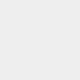

边框,圆角
1. 使用.border 给元素增加相应的边框，默认是淡灰色2. 如果颜色太淡，可以使用 .border-* 设置想要的场景，比如.border-success
3. .border-*，包含:primary、secondary、success、danger、warning, info、light、dark 和 white
要先写上border或者border-top等,再写颜色才有效
border:四面边框; border-top等等是四面的边框

4. 使用 .border-0 消减四周的边框，或使用.border-*-0 消减某一边的边框； border-0 删除全部边框
5. 使用 .rounded 和 .rounded-* 实现各种方位圆角； 后面是不同的圆角样式, 0没有样式

6. 使用 .rounded-sm 和 .rounded-lg 实现圆角半径大小
文本
1. 使用 .text-* 将文本设置成指定的颜色，比如:text-successbootstrap text-primary text-secondary text-success text-danger text-warning text-info text-dark text-dark text-dark text-light bg-dark text-white bg-dark
text-black-50 亮度减50
text-black-50 text-white-50 bg-dark
2. 使用 .text-* 也可以实现悬停和焦点的超链接样式，white 和 muted 不支持
bootstrap text-primary text-secondary text-success text-danger text-warning text-info text-dark text-body text-muted text-light bg-dark text-white bg-dark text-black-50 text-white-50 bg-dark
3. 使用 .bg-* 可以实现背景色，具体如下
p-2 padding 内边距
mb-2 margin botton 下边外边距
p-2 mb-2 bg-primary
p-2 mb-2 bg-secondary
p-2 mb-2 bg-success
p-2 mb-2 bg-danger
p-2 mb-2 bg-warning
p-2 mb-2 bg-light
p-2 mb-2 bg-dark
p-2 mb-2 bg-white
p-2 mb-2 bg-transparent